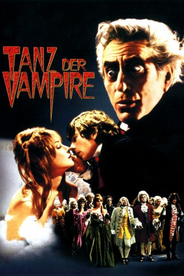
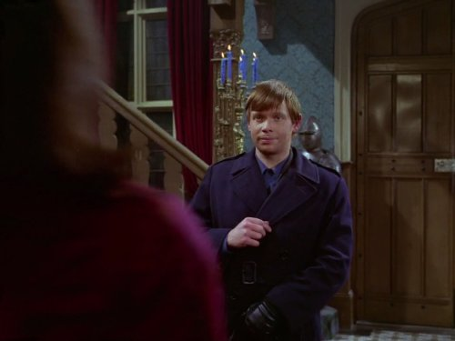
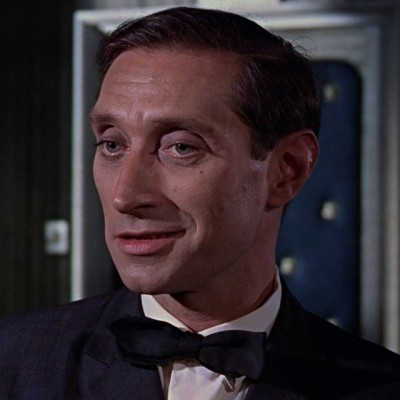

#1585 Tanz der Vampire
Alternativ: The Fearless Vampire Killers (Englischer Titel)
 
 IMDB-Wertung: 7.2 / 10
IMDB-Wertung: 7.2 / 10  Metascore: 0
Metascore: 0 
Nachdem er wegen seiner umstrittenen Theorien zum Thema "Vampirismus" seinen Lehrstuhl an der Universität Königsberg verloren hat, reist der Vampirexperte Professor Ambronsius (Jack MacGowran) gemeinsam mit seinem Assistenten Alfred (Roman Polanski) nach Transsylvanien, um Beweise für die Existenz blutsaugender Untoter zu sammeln und seinen Ruf wieder herzustellen. Schon bald finden die beiden Abenteurer in einem Gasthaus Hinweise auf Vampire in der Umgebung: Knoblauchgirlanden an den Wänden! Der Wirt Shagal (Alfie Bass) versucht, die alarmierten Gäste davon zu überzeugen, dass es keine Vampire gäbe, doch schon bald entdecken diese die Existenz des Vampirfürsten Krolock (Fery Mayne). Der hat es sich zum Ziel gesetzt, die schöne Wirtstochter Sarah (Sharon Tate) zu seiner Gefährtin für die Ewigkeit zu machen....
Jahr: 1967
Dauer: 91 Minuten
FSK: 12
Land: USA Studio: MGMTonspuren:
Untertitel:
Auflösung: 1080p (1920x792) Größe: 6860 MB
Genre: Komödie, Horror
Regisseur:  Roman Polanski
Roman Polanski
Drehbuch: Gérard Brach, Roman Polanski
Soundtrack: Krzysztof Komeda
Darsteller:
 Jack MacGowran als Professor Abronsius
Jack MacGowran als Professor Abronsius- Sharon Tate als Sarah Shagal
 Ferdy Mayne als Count von Krolock
Ferdy Mayne als Count von Krolock- Matthew Walters als Woodcutter
- Alfie Bass als Shagal, the Inn-Keeper
- Jessie Robins als Rebecca Shagal
- Iain Quarrier als Herbert von Krolock
- Terry Downes als Koukol, the Servant
- Fiona Lewis als Magda, the Maid
-  Ronald Lacey als Village Idiot
- Sydney Bromley als Sleigh Driver
- Andreas Malandrinos als Woodcutter
- Otto Diamant als Woodcutter
-  Vladek Sheybal als Herbert
- Roy Evans als Vampire at Ball , uncredited
Datei: X:\1967\Tanz der Vampire (1967, FSK12, 1920x792).mkv seit 23.07.2015
Festplatte: HD 1900-1970
 Es gibt insgesamt 24 Filme in der Gruppe '1967'
Es gibt insgesamt 24 Filme in der Gruppe '1967'